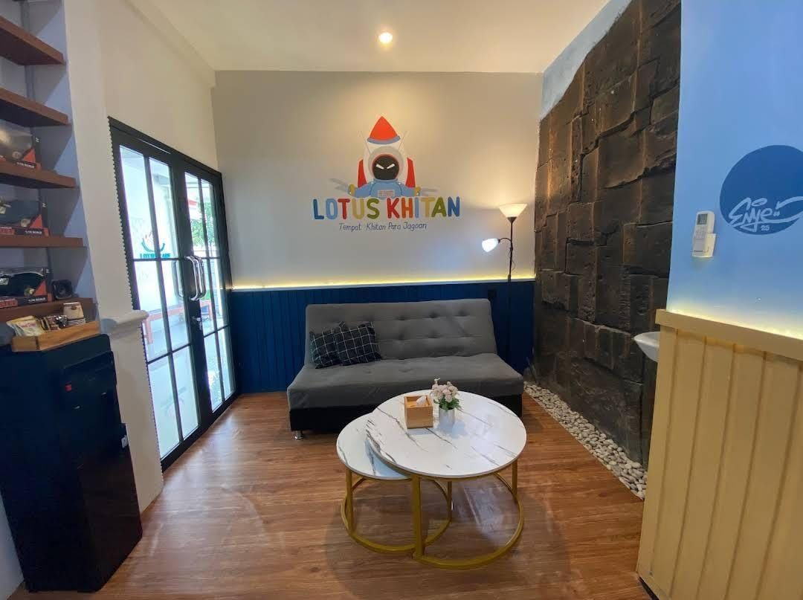

Khitan Modern, Pengalaman Nyaman untuk Si Kecil
Tempat khitan dengan suasana ramah anak, fasilitas yang nyaman, dan pelayanan yang membantu orang tua mempersiapkan proses khitan dengan lebih tenang.
- Suasana ramah anak
- Pelayanan ramah
- Jetis, Mojokerto

Bukan Sekadar Tempat Khitan, Tetapi Pengalaman yang Lebih Menyenangkan untuk Anak
Ruangan Lotus Khitan dihias dengan tema luar angkasa agar anak merasa lebih nyaman dan tidak takut. Orang tua tetap mendapatkan informasi yang jelas dan pendampingan selama proses berlangsung.
Pilihan Layanan untuk Berbagai Kebutuhan
Khitan Anak
Layanan khitan untuk anak dengan suasana yang ramah dan pendampingan orang tua.
Tanyakan DetailKhitan Bayi
Layanan khitan untuk bayi, dengan penjelasan yang disesuaikan.
Khitan Dewasa
Layanan khitan untuk remaja dan dewasa.
Khitan Gemuk
Layanan dan konsultasi khusus untuk kebutuhan tertentu.
Khitan Massal
Layanan untuk kelompok atau kegiatan bersama.
Paket Home Khitan
Pilihan layanan dengan kunjungan sesuai ketentuan wilayah dan jadwal.
Lihat PaketDetail layanan dan metode dikonfirmasi saat konsultasi melalui WhatsApp.
Lihat Suasana Tempat Kami
Video singkat yang memperlihatkan ruangan dan suasana Lotus Khitan. Tonton dengan kontrol pemutaran, tanpa suara otomatis.
Pengalaman Pengunjung
Rating 5,0 dari 165 ulasan Google Maps.
“Tempatnya nyaman, pelayanannya bagus polll, anak-anak malah suka karena bisa ngegame.”
Wulan Dewi“Pelayanan sangat baik dan memuaskan, tempatnya nyaman, harganya pun terjangkau, metodenya pun sudah modern.”
Devy Yulia“Alhamdulillah tanggal 15 Mas Raffael khitan di sini, hasilnya memuaskan.”
Nurul KhusniyahSiapkan Pengalaman Khitan yang Lebih Nyaman untuk Jagoan Kecil Anda
Konsultasikan kebutuhan khitan dan informasi layanan melalui WhatsApp.